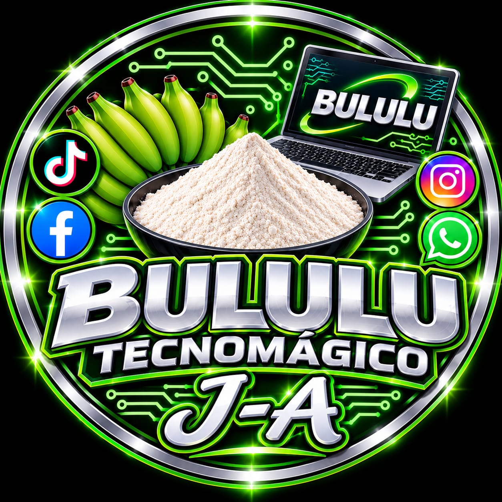
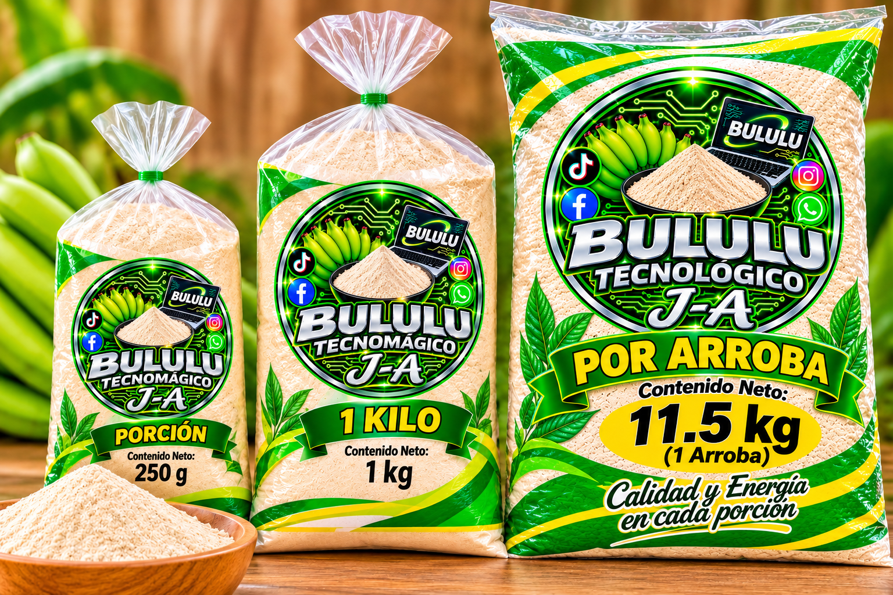

El sabor tradicional de nuestro Bululu
Descubre el valor de nuestras tradiciones y el sabor del plátano, un producto que forma parte de la vida y la cultura de las familias de Huacaraje.
Ver productos
>
La historia del Bululu
El bululu representa una expresión de la cocina tradicional vinculada al aprovechamiento del plátano en nuestra región. Su preparación y consumo forman parte de los conocimientos que las familias comparten de generación en generación.
En Huacaraje, Beni, conservar las preparaciones tradicionales significa valorar los ingredientes de nuestra tierra, las costumbres de nuestra gente y la identidad de nuestra comunidad.
Con Bululu TecoMágico queremos dar a conocer esta tradición mediante la tecnología, mostrar nuestros productos y llegar a más personas a través de Internet.
Conoce nuestro catálogo
Elige tus productos favoritos y prepara tu pedido.
Carrito de compras 🛒
Revisa tus productos antes de enviar el pedido.
Todavía no agregaste productos.
Total: Bs 0.00
¡Gracias por apoyar lo nuestro!
BululuTecnoMágico — Tradición, sabor y cultura de Huacaraje.
Explorar productos